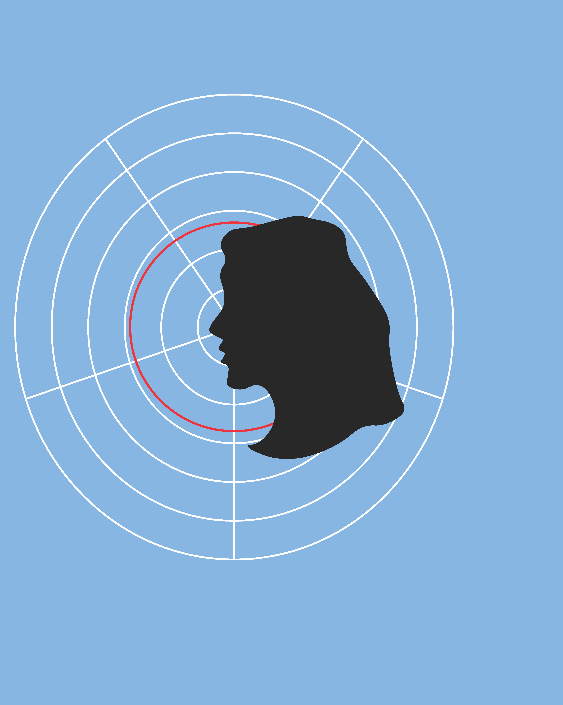

Julie Sonne
En 22-årige kreativ sjæl, der til læser Multi Medie Design på CPH i Lyngby. Der til hverdag beskæftiger sig med kodning og design af hjemmesider og apps.

| O | M | K | R | I | N | G |
En 22-årige kreativ sjæl, der til læser Multi Medie Design på CPH i Lyngby. Der til hverdag beskæftiger sig med kodning og design af hjemmesider og apps.